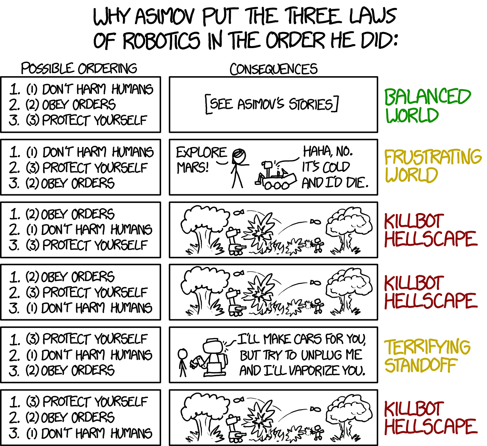

Engineering Communication
If writing clear instructions for another person is hard, imagine trying to write rules for a machine that can't ask questions, doesn't understand context, and always follows instructions literally.
That's exactly the challenge science fiction author Isaac Asimov explored when he created the Three Laws of Robotics, a set of rules meant to keep humans safe when working with intelligent machines. He wrote them in 1942 for a short story called "Runaround," which later became part of the 1950 collection I, Robot.

As that comic shows, even when rules sound clear, how they're written, and in what order, can lead to very different outcomes.
That's exactly the challenge we face with AI. It doesn't guess what we meant, it follows the instructions we give it. And those instructions usually start with something called a system prompt.
Large language models are given system prompts when they're made to interact with humans. These are "rules" that guide the AI's personality and behavior.
Imagine you've been asked to program an AI that helps manage someone's social media presence. It can suggest posts, captions, and replies, but you have to give it three important rules it must always follow. These rules will act like its core values, guiding how it communicates and what kind of advice it gives.
Now it's time to test the instructions you created for your robot arm.
When you've tested out all of the other groups' robot arms: